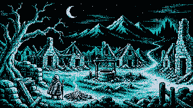
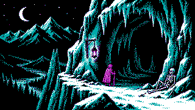
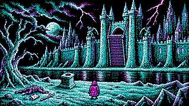

Aventures sur micro-ordinateur · Depuis 1987
Les Chroniques des Terres Obscures

Là où commencent les légendes
Il ne reste que des ruines.
Les armées de l’Ombre ont incendié votre foyer et dispersé les survivants. Depuis cette nuit, vous parcourez les Terres Obscures à la recherche des puissances qui ont condamné les vôtres.
Entre deux expéditions, vous revenez auprès du dernier feu du village. C’est ici que les chemins se séparent — et que vous choisissez votre prochaine quête.
Chroniques disponibles
Choisissez votre quête

La Grotte du Sorcier de Givre
Brisez le sortilège qui condamne la vallée à un hiver sans fin.
Commencer la quête
Le Château du Seigneur des Ténèbres
Infiltrez la forteresse et dérobez l’anneau qui nourrit sa puissance.
Commencer la quêteLa Forêt de l’Ombre Sans Nom
Retrouvez le nom oublié de l’entité qui a condamné la forêt à une nuit éternelle.
Commencer la quêteInventaire des chroniques
Reliques rapportées au village
- Aucune relique rapportée
Les objets majeurs gagnés au terme d’une quête restent disponibles pour les aventures suivantes sur cet appareil.